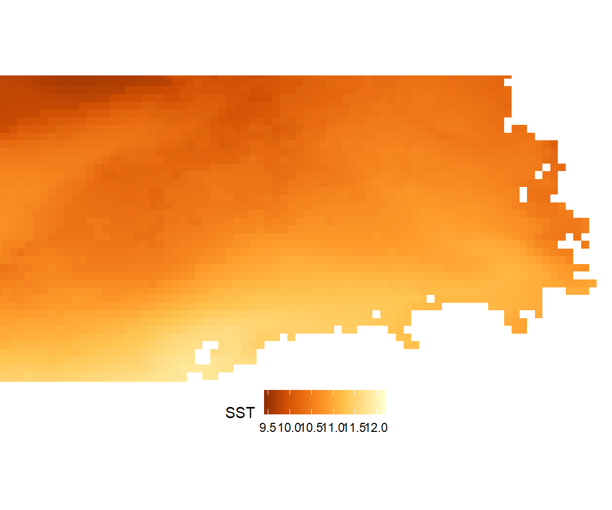
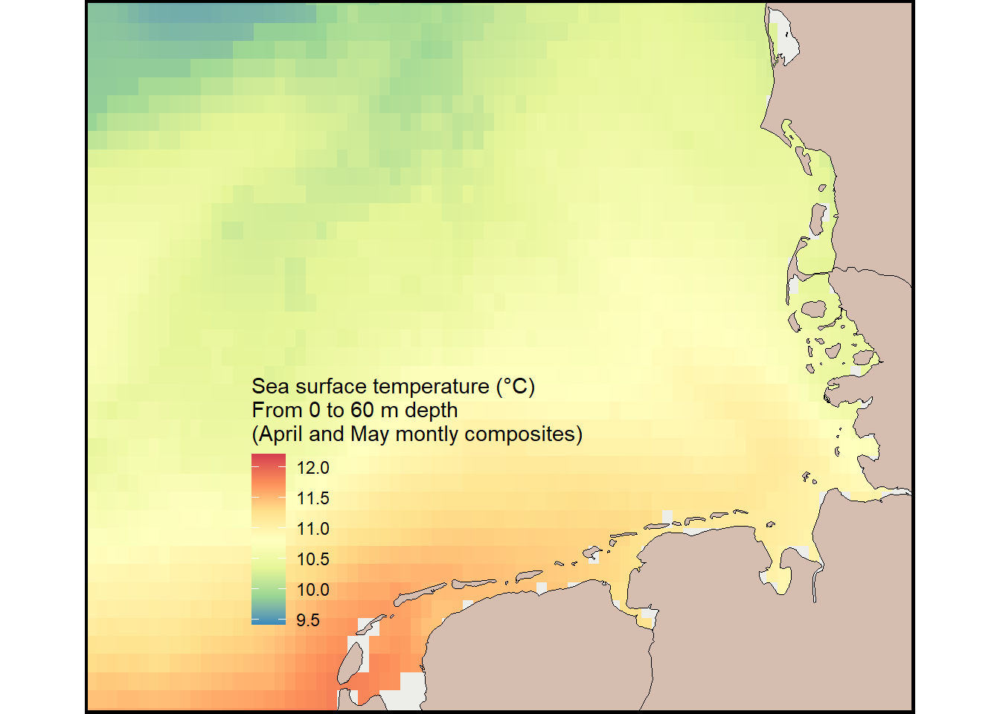

SST_nc<-"https://github.com/MiriamLL/data_supporting_webpage/raw/refs/heads/main/Blog/2025/SST/cmems_mod_glo_phy_my_0.083deg-climatology_P1M-m_1729785319560.nc"Sea surface temperature
R
ggplot2
English
Y2025
In this blog post, I walk you through the process of visualizing sea surface temperature in R. From downloading the dataset to reading it and creating a map using ggplot.
Intro
The Copernicus Marine Service (CMS), also known as the Copernicus Marine Environment Monitoring Service, is the marine component of the European Union’s Copernicus Programme.
It delivers free, regular, and systematic information on the state of the ocean, encompassing the Blue (physical), White (sea ice), and Green (biogeochemical) components, both globally and regionally.
Funded by the European Commission (EC) and implemented by Mercator Ocean International, the service is designed to support EU policies and international legal commitments related to Ocean Governance. It also addresses the global need for ocean knowledge and fosters the Blue Economy across all maritime sectors by providing cutting-edge ocean data and information at no cost.
This post includes:
- Download raster data
- Read and subset raster data
- Plot raster data
Data
Raster data is available at: Copernicus Marine Data Store
To access the products. You need to register to be able to download data
Sea surface temperature (SST) refers to the temperature of the uppermost layer of the ocean, typically measured at the surface of the sea.
For downloading the data: follow this instructions.
- For this exercise:
Download sea water potential temperaturethetao [°C]
Based on the coordinates 1 to 10 and 50 to 60
For the time frame of April and May 2018
From the depths 0 to 60 m
To download test data in nc format click here.
Read data
Select the directory where the information is stored, or as here, use the data directly form the repository.
Load the terra package for reading raster data.
library(terra)terra 1.7.78The function rast helps to read raster data - replacing package raster.
SST_file<-rast(SST_nc)Subset raster data
Change to data frame for data wrangling.
SST_dataframe <- as.data.frame(SST_file, xy = TRUE)Load the package tidyverse.
library(tidyverse)── Attaching core tidyverse packages ──────────────────────── tidyverse 2.0.0 ──
✔ dplyr 1.1.4 ✔ readr 2.1.5
✔ forcats 1.0.0 ✔ stringr 1.5.1
✔ ggplot2 3.5.1 ✔ tibble 3.2.1
✔ lubridate 1.9.3 ✔ tidyr 1.3.1
✔ purrr 1.0.2
── Conflicts ────────────────────────────────────────── tidyverse_conflicts() ──
✖ tidyr::extract() masks terra::extract()
✖ dplyr::filter() masks stats::filter()
✖ dplyr::lag() masks stats::lag()
ℹ Use the conflicted package (<http://conflicted.r-lib.org/>) to force all conflicts to become errorsUse filter to subset the data to a specific geographical area.
SST_sub <-SST_dataframe %>%
filter(x > 2 & x < 10)%>%
filter(y > 52 & y < 57)Obtain mean values per latitude and longitude
There are many columns with data per depth, as data was collected almost every meter.
ncol(SST_sub)[1] 230To keep columns with the depth area use the functions select and starts_with.
SST_depth<-SST_sub %>%
select(starts_with("thetao"))Check the depths were the data was collected.
Depths<-colnames(SST_depth)
head(Depths)[1] "thetao_depth=0.49402499_1" "thetao_depth=1.541375_1"
[3] "thetao_depth=2.645669_1" "thetao_depth=3.819495_1"
[5] "thetao_depth=5.0782242_1" "thetao_depth=6.4406142_1" Using functions from tidyverse such as rowwise, summarise the information per depth.
SST_depth_perloc<-SST_depth %>%
rowwise()%>%
mutate(mean_SST = mean(c_across(where(is.numeric)),na.rm=TRUE),
min_SST = min(c_across(where(is.numeric)),na.rm=TRUE),
max_SST = max(c_across(where(is.numeric))),na.rm=TRUE)%>%
relocate(mean_SST,min_SST,max_SST)The function arrange from the package tidyverse allows to see the columns of interest first.
first_column<-SST_depth[1,]
long_values<-first_column %>%
pivot_longer(
cols = 1:228,
names_to = "type",
values_to = "value"
)
arrange_values<-arrange(long_values, desc(value))| type | value |
|---|---|
| thetao_depth=0.49402499_8 | 15.87216 |
| thetao_depth=1.541375_8 | 15.84872 |
| thetao_depth=2.645669_8 | 15.82235 |
| thetao_depth=3.819495_8 | 15.80038 |
| thetao_depth=5.0782242_8 | 15.78133 |
| thetao_depth=6.4406142_8 | 15.76009 |
Now there is a value per latitude and longitude of the sea surface temperature, summarizing the first 60 m of the water column.
SST_sub$SST<-SST_depth_perloc$mean_SSTmean(SST_sub$SST)[1] 10.57249Plot
Load the package ggplot2
library(ggplot2)Plot your data using geom_raster
ggplot() +
geom_raster(data = SST_sub , aes(x = x, y = y, fill = SST)) +
theme_void()+
theme(legend.position='bottom')+
coord_sf(xlim = c(3,9), ylim = c(53,56))Warning: Raster pixels are placed at uneven horizontal intervals and will be shifted
ℹ Consider using `geom_tile()` instead.To select different palettes explore ggplot2 book. Here are some of the palette options.

To change the color palette use scale_fill_distiller.
ggplot() +
geom_raster(data = SST_sub , aes(x = x, y = y, fill = SST)) +
scale_fill_distiller(palette = "YlOrBr")+
theme_void()+
theme(legend.position='bottom')+
xlab('Longitude')+ylab('Latitude')+
coord_sf(xlim = c(3,9), ylim = c(53,56),
label_axes = list(top = "E", left = "N", bottom = 'E', right='N'))Warning: Raster pixels are placed at uneven horizontal intervals and will be shifted
ℹ Consider using `geom_tile()` instead.
Add land shapefiles to complete the map. To add shapefiles load the package sf.
library(sf)Linking to GEOS 3.12.1, GDAL 3.8.4, PROJ 9.3.1; sf_use_s2() is TRUEUse the function st_transform to convert to the same CRS.
For the exercise, use the shapefiles from the package GermanNorthSea
German_land<-st_transform(GermanNorthSea::German_land, 4326)Add the land to the plot using geom_sf.
Plot_sst<-ggplot() +
geom_tile(data = SST_sub , aes(x = x, y = y, fill = SST)) +
scale_fill_distiller(name="Sea surface temperature (°C) \nFrom 0 to 60 m depth\n(April and May montly composites)",
palette = "Spectral")+
geom_sf(data = German_land, colour = 'black', fill = '#d5bdaf')+
coord_sf(xlim = c(3,9), ylim = c(53,56),
label_axes = list(top = "E", left = "N", bottom = 'E', right='N'))+
theme_void()
Plot_sstChange a little bit the design using arguments in the theme.
Plot_sst +
theme_void()+
xlab('Longitude')+ylab('Latitude')+
theme(legend.background = element_rect(colour = "transparent", fill = "transparent"),
legend.position = c(0.40,0.30),
panel.background = element_rect(fill = '#edede9'),
panel.grid.major = element_blank(),
panel.grid.minor = element_blank(),
panel.border = element_rect(colour = "black", fill=NA, size=1.5))+
NULLWarning: The `size` argument of `element_rect()` is deprecated as of ggplot2 3.4.0.
ℹ Please use the `linewidth` argument instead.Warning: A numeric `legend.position` argument in `theme()` was deprecated in ggplot2
3.5.0.
ℹ Please use the `legend.position.inside` argument of `theme()` instead.
Further reading
- Examples from Copernicus
- How to download Copernicus marine products
- Video Tutorials from Copernicus
- Comparing with other studies palettes: SST in the German North Sea from 2004
- Package GermanNorthSea
- Package terra
- Package sf